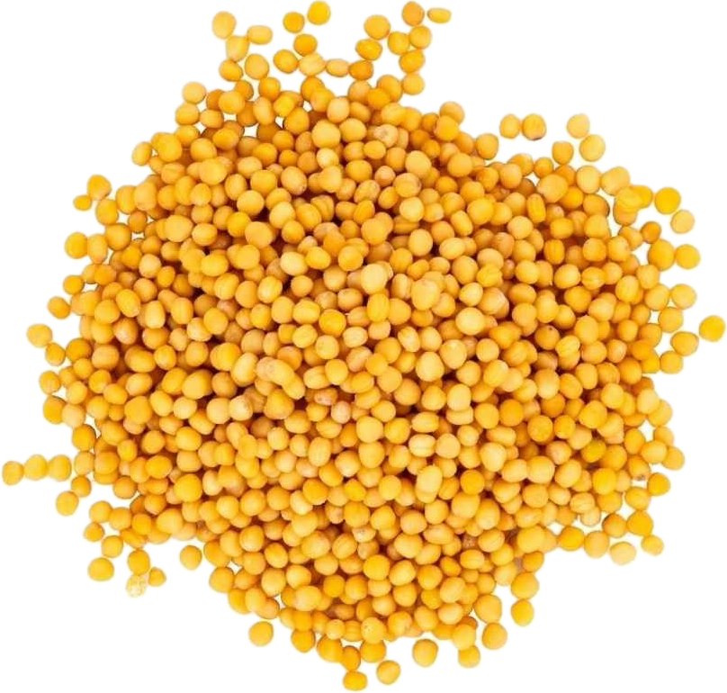

Sinapis alba
Overview
White mustard is a plant species in the Brassicaceae family, native to the Mediterranean region. It produces small, round seeds that are yellowish-white in color and have a mild, tangy flavor. White mustard seeds are commonly used as a spice and condiment in cooking and pickling.
Cultural Overlap
White mustard seeds are used in cuisines around the world, particularly in European, Indian, and Middle Eastern cuisines. They are used to flavor meats, pickles, sauces, dressings, and condiments such as mustard. White mustard seeds also have cultural significance in traditional medicine and folklore, where they are believed to have various health benefits and protective properties.